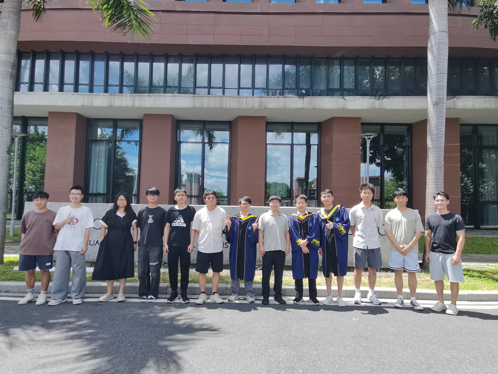
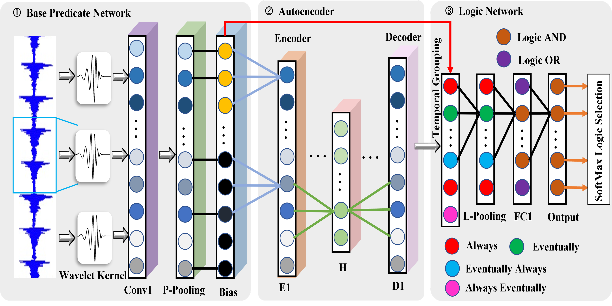
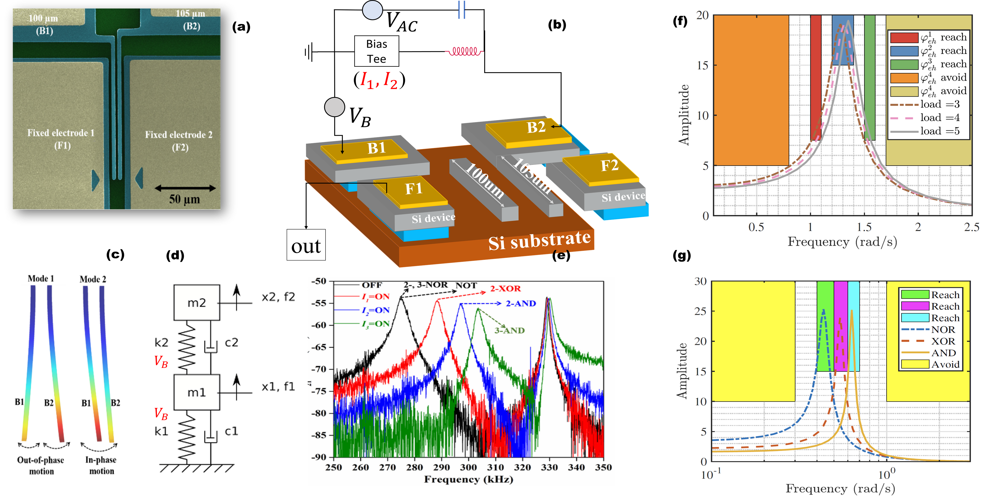
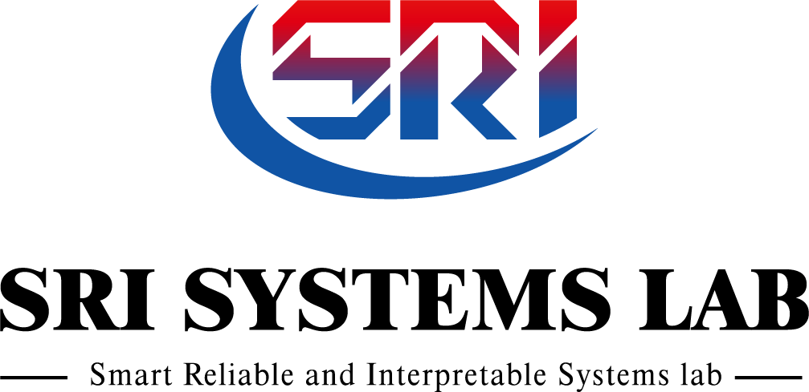

-

Campus View
-

Neuro-Symbolic Foundations
-

STL-Driven Safe Autonomy
Smart, Reliable, and Interpretable Systems — we fuse logic, physics, and learning to build trustworthy AI for intelligent manufacturing and critical equipment.
Our unified methodology—Signal Temporal Logic (STL), causal structure, and physics-guided priors—drives interpretable diagnosis, STL-driven safe autonomy, verifiable machine learning, and fleet-level health management.

STL-regularized pretraining, causal KGs, and rule distillation for audit-ready industrial AI.
Physics-guided features + causal graphs + STL abstractions to reconstruct propagation chains.
STL contracts, reference governors, and residual RL for dual-arm & mobile manipulation.
SRIS is led by Dr. Gang Chen. We study machine learning, formal methods, control, and signal processing for cyber-physical system monitoring and control. Our deliverables include interpretable fault diagnosis algorithms, contract-based controllers, verifiable ML toolchains, and fleet-level PHM (Prognostics & Health Management).
Loading latest news...